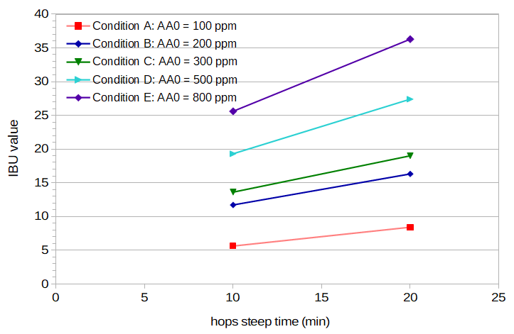
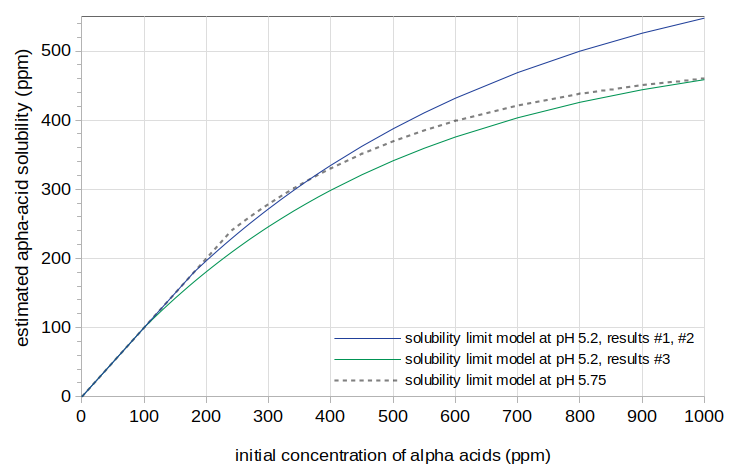

Abstract
In a previous blog post, Hopping-Rate Correction Based on Alpha Acid Solubility, I describe a model of hopping-rate correction (for predicting IBUs) based on estimated alpha-acid solubility at boiling. In this model, solubility is not a limiting factor up to 240 ppm, after which solubility increases much more slowly than the concentration of alpha acids. Any alpha acids that are above this solubility limit are quickly degraded and do not contribute to the isomerized alpha acids in the finished beer. This model demonstrated a good fit to the available IBU data at a variety of hopping rates and boil times, but was only evaluated at a relatively high wort pH of about 5.75. According to Spetsig, alpha-acid solubility is greatly influenced by pH. In this post, I estimate alpha-acid solubility at boiling and a wort pH of 5.2, and show that the alpha-acid solubility limit at boiling does not seem to vary greatly with pH.
1. Introduction
The questions that this blog post attempts to answer are, "Does the solubility limit of alpha acids at boiling change significantly with pH, and if so, how?" This section presents some background on pH in brewing and alpha-acid solubility.
1.1 Mash and Wort pH
Wort made from two-row malt and low-alkalinity water has a pH of about 5.8 [deLange; Palmer and Kaminski, p. 58], depending in part on the specific gravity. Briess Pilsen Light DME, which I usually use for these experiments as an easy-to-use and consistent source of wort, shows the same pH characteristics as two-row malt mashed with low-alkalinity water. The typical brewer should aim for a mash pH in the ballpark of 5.2 to 5.4 [Palmer and Kaminski, p. 60; Noonan, p 144; Fix, p 49; Troester citing Kunze (2007) and Narziss (2005)], although a pH as high as 5.8 is still acceptable [Troester]. The pH of room-temperature wort can therefore vary from about 5.2 to about 5.8.
1.2 pH and Wort Temperature
Palmer and Kaminski note that wort temperature affects pH in two ways: (a) the response of the pH probe changes as a function of temperature, and (b) the chemical activity of a solution (e.g. wort) also changes with temperature. A pH meter with ATC will adjust for the first case, but not the second. They say that "the pH of the wort at mash temperature (~65°C, 150°F) is known to be about 0.3 lower than the same wort when it is cooled to room temperature (~20°C, 68°F). That is why brewers always refer to pH measurements at room temperature" [Palmer and Kaminski, p. 86].
In a previous blog post, I looked at how the pH of wort varies as a function of both temperature and room-temperature pH (i.e. a baseline pH). I found that while the pH does decrease with temperature, the amount of decrease is less at lower room-temperature pH values. If we extrapolate to boiling, a room-temperature pH of 5.75 will have a boiling pH of 5.33, and a room-temperature pH of 5.20 will have a boiling pH of 4.94. This difference of 0.39 pH units, while less than the original difference of 0.55, suggests that there may still be pH-related differences in wort at boiling, although less than would be expected from the room-temperature pH difference.
1.3 pH and Utilization
It is generally thought that a lower wort pH will decrease utilization [e.g. Lewis and Young, p. 266; Askew 1964, p. 510]. (Utilization is the ratio of isomerized alpha acids (IAA) in the finished beer to the total alpha acids added.) However, Mark Malowicki looked at IAA produced and degraded during boiling at pH values of 4.8, 5.2, 5.6, and 6.0, and found that "the level of iso-alpha concentrations ... was nearly identical for all pH levels" in a buffer solution [Malowicki, p. 37], and that the use of maltose, glucose, or calcium in the solution had no impact on isomerization [Malowicki, p. 39]. He speculated that "the losses to trub would better explain the differences in utilization that are attributed to pH..., since rate of isomerization does not appear to be affected" [Malowicki, p. 41, emphasis mine]. Kappler et al. looked at the recovery rate of IAA, which is inversely related to the losses of IAA that occur during the boil. They found that while there was a large change in IAA recovery rates between pH 4.0 (58% recovery) and pH 8.0 (95% recovery), the difference in recovery rates (and hence losses) between pH 5.0 and pH 6.0 were much smaller (80% and 86% recovery, respectively) [Kappler et al., p. 334].
In another blog post, I looked at utilization and IBUs as a function of pH in the range of 5.30 to 5.73, and found that the observed reduction in IBUs with lower pH could be modeled primarily by a loss of "auxiliary bitter compounds" ("ABC" or "nonIAA"), which are the bitter components other than IAA contributing to the IBU.
1.4 pH and Alpha-Acid Solubility
There is little previous work looking at pH and alpha-acid solubility. In 1955, Lars-Olov Spetsig published estimates of alpha-acid solubility as a function of pH and temperature [Spetsig]. He used two temperatures in his measurements, 77°F (25°C) and 104°F (40°C), and from those temperatures he extrapolated to conditions at boiling. He found that at room temperature and pH 5.2 the alpha-acid solubility is about 70 parts per million (ppm), and that this increases to about 200 ppm at pH 5.75 [Spetsig, p. 1423]. At boiling and pH 5.2, he estimates the solubility at 350 ppm, which increases to about 1000 ppm at pH 5.75 [Spetsig, p. 1423].
D. R. Maule noted that "when humulone was used at rates greater than 200 [ppm] the amount appearing as [alpha acids] and [iso-alpha-acids] on break increased at the expense of the amounts remaining in the wort" [Maule, p. 289]. He concluded that what is not actually adsorbed to the break "represents the difference between the amount of resin present and its solubility in wort under the conditions employed" [Maule, p. 289]. This suggests an alpha-acid solubility limit close to 200 ppm at boiling with wort pH 5.7 [Maule, p. 287].
Malowicki studied alpha-acid solubility at room temperature and found, in general agreement with Spetsig, a limit of 90 ppm at pH 5.2 [Malowicki, pp. 54]. He also noted that the solubility "curve did not completely plateau, there was a distinct knee in the curve and break from linearity" [Malowicki, p. 53]. In a previous blog post, I noted the same trend with solubility estimates at boiling and pH 5.75, and estimated the solubility limit under these conditions as starting at approximately 240 ppm.
2. Approach
2.1 General Approach
I previously modeled alpha-acid solubility at boiling and a (room-temperature) wort pH of about 5.75 as gradually increasing with initial alpha-acid concentration according to the formulas
[AA]limit = [AA]limitMax × (1 − exp(slope × [AA]0))
slope = log(1 − ([AA]limitMin / [AA]limitMax)) / [AA]limitMin
[AA]limitMin = 240
[AA]limitMax = 490
2.2 Estimating Solubility at pH 5.2
The approach used in this experiment was to create five conditions (i.e. five batches of beer) with different hop concentrations, all at a target pH of 5.2, with one condition having an alpha-acid concentration well below the expected solubility limit. The wort from each condition was sampled after both 10 and 20 minutes of steep time. All ten samples were fermented into beer. The resulting IBU values were then fit to an equation that maps from initial alpha-acid concentration to IAA levels and another set of equations that map between IAA levels and IBU values. This second of equations has two free parameters, as described below in Section 4.1. Fitting was done by varying the two parameters of the solubility model ([AA]limitMin and [AA]limitMax) and the two free parameters of the IBU model to minimize the root-mean-square error between modeled and measured IBU values. The general parameter-estimation technique for the IBU model is described in Estimating Isomerized Alpha Acids and nonIAA from Multiple IBU Measurements.
3. Experimental Methods and Data
I brewed five batches of beer for this experiment. These five conditions were designed to be identical in all respects except for the concentration of alpha acids.
I created one large pool of wort from which all five conditions were brewed. Targeting a boil gravity of 1.040, I used 7.0 lbs (3.175 kg) of Briess Pilsen DME in 8.0 G (30.28 l) of water, yielding about 8.52 G (32.25 l) of wort with a specific gravity of 1.0385. I boiled this wort (uncovered) for about 5 minutes, and then cooled it with a wort chiller to less than 75°F (24°C), yielding 8.28 G (31.34 l) with specific gravity 1.040. The pH of this wort was 5.75. I then added phosphoric acid (a total of 6.75 tsp (33.27 ml)) in order to reach a target pH of 5.20 at 70°F (21°C). Each condition started with 1.50 G (5.68 l) from this larger pool of wort. Except for taking samples after 10 and 20 minutes of boiling, the wort was boiled with the cover on the kettle in order to minimize evaporation losses.
I used hops from a 1 lb (0.45 kg) bag of Citra HBC394 from Hops Direct that were purchased soon after harvest and stored in a vacuum-sealed bag in my freezer. This bag had an alpha-acid rating on the package of 14.3%. I had samples from this bag sent to two laboratories two months before the current experiment, which was conducted in February 2018. Within three weeks following the current experiment, I had another two samples analyzed, with one laboratory the same and another one different. Analysis results are shown in Table 1. Because of the small number of samples, and because of the difficulty of a reliable alpha-acid estimate under the best of circumstances [Hough et al., p. 432; Verzele and De Keukeleire, p. 331], it is more appropriate to take the median than the mean for a representative value of the alpha acid rating. It can be seen that the median alpha-acid rating is 14.2%, and the median beta-acid rating is 3.35%. (The mean AA value of 14.3% is quite close to the median, fortunately. I went a bit overboard with testing this time, which was probably an over-reaction to difficulties I encountered in the blog post Hopping Rate Correction Based on Alpha-Acid Solubility.)
| Package Rating | Alpha Analytics, within 8 weeks | Brew Laboratory #1, within 8 weeks | AAR Lab, within 3 weeks | Brew Laboratory #2, within 3 weeks | |
| alpha acids | 14.3% | 14.2% | 14.1% | 13.5% | 15.5% |
| beta acids | N/A | 3.6% | 3.4% | 3.3% | 3.7% |
| HSI | N/A | 0.265 | N/A | 0.29 | N/A |
During the boil, I contained the hops in a large nylon coarse-mesh bag in order to not include large hop particles in my samples. Previous experiments (from Brülosophy: 25 IBUs (bagged) vs. 27 IBUs (loose), and Four Experiments on Alpha-Acid Utilization and IBUs: 36 IBUs (bagged) vs. 37 IBUs (loose) and 34 IBUs (bagged) vs. 34 IBUs (loose)) have not shown a significant impact of a mesh bag on measured IBU values. In order to maximize contact of the hops with the wort, I added brass weights (a total of 3.2 oz (90.7 g)) to the mesh bag so that the hops would be quickly submerged and hydrated.
For all conditions, I took samples of wort after 10 and 20 minutes of steep time. Each sample (about 14 oz (0.41 l)) was taken from the boil and immediately transferred to an aluminum cup. The sample was then placed in an ice bath and stirred to cool quickly. Once cooled to 75°F (24°C), the sample was transferred to a sanitized, sealed, and labeled quart (liter) container. I aerated each sample by vigorous shaking for 60 seconds, then added .01 oz (0.28 g) of Safale US-05 yeast (age 10 months) to target 750,000 viable cells per ml and degree Plato [Fix and Fix, p. 68]. After all samples were taken, the containers were cracked open to vent and they fermented. After ten days of fermentation, I sent 4 oz (0.12 l) of each sample to Oregon BrewLab for IBU and original-gravity measurement. The final gravity of all samples was about 1.0055 (minimum 1.0050; maximum 1.0060).
Table 2 provides data for each condition, including initial wort volume, weight of hops added, estimated initial alpha-acid concentration, and post-boil pH. Tables 3 and 4 show the original gravity, post-boil volume, and measured IBUs from each condition at 10 minutes and 20 minutes, respectively. Original gravity values were measured by Oregon BrewLab in degrees Plato, and I converted those values to specific gravity using an equation from Spencer Thomas. The post-boil volume was estimated from the pre-boil volume, pre-boil gravity, and original gravity. IBU values were measured by Oregon BrewLab. Figure 1 shows the measured IBU values for the five conditions at 10 and 20 minutes of hop boiling time.
| Condition A | Condition B | Condition C | Condition D | Condition E | |
| initial wort volume | 1.50 G / 5.678 l |
1.50 G / 5.678 l |
1.50 G / 5.678 l |
1.50 G / 5.678 l |
1.50 G / 5.678 l |
| weight of hops added | 0.142 oz / 4.027 g |
0.284 oz / 8.054 g |
0.426 oz / 12.081 g |
0.710 oz / 20.135 g |
1.136 oz / 32.216 g |
| estimated initial alpha-acid concentration | 100 ppm | 200 ppm | 300 ppm | 500 ppm | 800 ppm |
| post-boil pH | 5.19 @ 67.5°F (19.7°C) | 5.17 @ 57.3°F (14.1°C) | 5.20 @ 70.5°F (21.4°C) | 5.18 @ 61.6°F (16.4°C) | 5.19 @ 57.3°F (14.1°C) |
| Condition: | A | B | C | D | E |
| OG | 1.0388 | 1.0380 | 1.0380 | 1.0380 | 1.0396 |
| volume | 1.50 G / 5.678 l |
1.50 G / 5.678 l |
1.50 G / 5.678 l |
1.50 G / 5.678 l |
1.50 G / 5.678 l |
| IBUs | 5.6 | 11.7 | 13.6 | 19.3 | 25.6 |
| Condition: | A | B | C | D | E |
| OG | 1.0388 | 1.0396 | 1.0396 | 1.0388 | 1.0396 |
| volume | 1.50 G / 5.678 l |
1.50 G / 5.669 l |
1.50 G / 5.669 l |
1.50 G / 5.674 l |
1.50 G / 5.678 l |
| IBUs | 8.4 | 16.3 | 19.0 | 27.4 | 36.3 |
 Figure 1. Measured IBU values for the five conditions (different initial concentrations of alpha acids) at 10 and 20 minutes of hop boiling time. The pre-boil pH in all conditions is 5.2.
4. Parameter Estimation Methodology
4.1 Estimating Parameters to Map between IBU and IAA
In order to estimate the alpha-acid solubility limit as a function of initial alpha-acid concentration, we need some way to translate between measured IBU values and estimated IAA concentrations. Peacock [p. 157] provides just such a formulation in a general form:
IBU = 5/7 × ([IAA]beer + [nonIAA]beer)
where IBU is the measured IBU value, [IAA]beer is the concentration of isomerized alpha acids in the finished beer, and [nonIAA]beer is the concentration of other bittering substances that aren’t isomerized alpha acids (also in the finished beer).The non-IAA compounds (also called "auxiliary bittering compounds" or "ABC") include oxidized alpha acids (abbreviated as "oAA"; produced during hop storage and during the boil), oxidized beta acids (produced during hop storage), hop polyphenols, and malt polyphenols. The oxidized alpha acids produced during the boil should be limited to the same extent that isomerization is limited. To accomplish this, I used estimates of the concentrations of each of these substances based on malt and hop concentrations, and limited the amount of alpha acids available for oxidization using the solubility-limit model. I left the percent of alpha acids that oxidize during the boil and remain after fermentation as a free parameter called scalingoAA.
We also need some way to translate between estimated IAA concentrations and the concentration of alpha-acids added to the wort. Malowicki provides a way to estimate IAA in the wort from alpha acids:
k1(T) = 7.9×1011 e-11858/T
k2(T) = 4.1×1012 e-12994/T
[IAA]wort = [AA]0 × (k1(T)/(k2(T) − k1(T))) × (e–k1(T)t − e–k2(T)t)
That leaves us with needing to find a factor called scalingIAA, which maps between [IAA]wort and [IAA]beer, and the factor scalingoAA, which maps from the concentration of alpha acids in the wort to [oAA]beer. A method for estimating these two factors is described in a blog post Estimating Isomerized Alpha Acids and nonIAA from Multiple IBU Measurements.
4.2 Estimating Solubility and the Impact of pH
The initial concentration of alpha acids, [AA]0, was reduced to the concentration of dissolved alpha acids using the two parameters of the solubility limit model and the concentration of alpha acids added to the wort. The concentration of dissolved alpha acids was then used to estimate [IAA]beer and [nonIAA]beer, which was then used to estimate an IBU value. The four parameters, scalingIAA, scalingoAA, [AA]limitMin, and [AA]limitMax were varied to minimize the error between estimated and measured IBU values.
If the function generated by [AA]limitMin and [AA]limitMax for wort pH 5.2 is not dramatically different from the function estimated at pH 5.75, then we can conclude that pH does not have a clear impact on alpha-acid solubility. If the functions are quite different, then we can use linear interpolation of these two values between the two pH extremes to estimate the solubility limit at any pH.
5. Results
5.1 Caveat
Before looking at the results in detail, I will note that there were only two measured IBU values per condition in this experiment. This is the minimum number for IBU parameter estimation, and the cost of a small number of data points per condition is greater uncertainty in the results. If I were to re-do this experiment with the benefit of hindsight, I would take (at least) four samples per condition, for a total of 20 samples to fit to four parameters. With more time and energy, I would repeat this experiment at a variety of wort pH levels, with a variety of AA ratings, and at a greater number of [AA]0 values. Because of the small number of data points currently available, we can expect significant variability in the results and therefore only detect a relatively large effect of pH on alpha-acid solubility.
5.2 Results #1
The search for the four parameters yielded the following values: scalingIAA = 0.21, scalingoAA = 0.040, [AA]limitMin = 180, and [AA]limitMax = 660. The root-mean-square (RMS) error was 0.67 IBUs. These values for the solubility limit model result in solubility at pH 5.2 that is greater than the solubility at pH 5.75. We expect, from Spetsig's analysis, that solubility should decrease as the pH decreases, and so these results contradict our expectations. The solubility-limit model resulting from these parameters is shown with a solid blue line in Figure 2. The solubility-limit model for pH 5.75 is shown with a dashed gray line.
5.3 Results #2
Because the initial results were unexpected, it is possible that the model has too many parameters (4) for the given number of data points used in analysis (10). I therefore assumed that the alpha-acid concentration of Condition A is below the solubility limit, and used the technique in Section 4.1 to estimate scalingIAA and scalingoAA for this condition without a solubility-limit model. This analysis yielded scalingIAA = 0.33 and scalingoAA = 0.015. Searching for the solubility-limit parameters yielded similar results as in the first analysis, [AA]limitMin = 200 and [AA]limitMin = 680, but with RMS error 1.61.
5.4 Results #3
In an attempt to find a solubility limit that decreases as the pH decreases, I used the value of scalingIAA from Results #2 (0.33) but allowed scalingoAA to be a free parameter. This parameter search yielded scalingoAA = 0.030, [AA]limitMin = 100, and [AA]limitMax = 520, with RMS error 1.25. The solubility-limit model resulting from these parameters is shown with a solid green line in Figure 2.
Given the expectation that solubility should decrease as pH decreases, it can be seen that there is not an exceptionally large difference between the estimates at pH 5.2 (green line) and the estimate at 5.75 (dashed-gray line), and so there is no clear effect of pH on alpha-acid solubility.
 Figure 2. Estimated alpha-acid solubility at pH 5.2 from Results #1 and Results #2 (blue line), at pH 5.2 from Results #3 (green line), and at pH 5.75 (dashed gray line).
6. Conclusion
The results from this experiment do not show a clear effect of wort pH on alpha-acid solubility at boiling. This was surprising to me, because Spetsig estimated large differences in alpha-acid solubility at boiling as a function of pH [Spetsig, p. 1423].
Spetsig obtained his estimates by extrapolating from measurements at 77°F (25°C) and 104°F (40°C), so it's possible that the extrapolation of alpha-acid solubility with temperature missed some non-linear changes of solubility with temperature. As I noted in Section 1.2, the rate of change in pH as a function of temperature is different depending on the room-temperature pH. Extrapolating these results to boiling results in the difference between room-temperature pH values of 5.20 and 5.75 being 0.39 pH units instead of 0.55 pH units. Again, it is possible that this extrapolation of pH with temperature is missing some non-linearity as the temperature approaches boiling, and that the pH of boiling wort is similar regardless of whether the room-temperature wort is 5.75 or 5.20.
In the end, I don't have a good explanation for why the data don't show an effect of pH. It is also quite probable that there were too few data points to robustly estimate the necessary model parameters. Until there is more data on the topic, though, the most plausible explanation seems to be that wort pH does not significantly affect alpha-acid solubility at boiling.
I would like to thank Dana Garves at Oregon BrewLab for her analysis of the samples. The consistency of the measured IBU values in Figure 1 demonstrates the high quality of her analysis.
References
Navigate to:
AlchemyOverlord home page